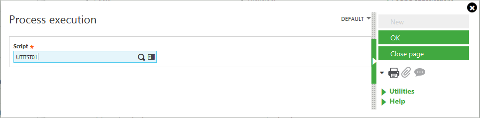

Upgrade - Updating repositories
Introduction
Developments are done by developers in GX3APP, which is a sandbox folder independent of release cycles.
When a development is done in GX3APP and must be delivered in the next release, it has to be manually backported into X3DEV which is a development folders linked to the next delivery repository. It allows to test the development and to fix issues in a stable folder.
Once the development is DoDed on X3DEV it has to be pushed by the developer using the "push push" tool (GESXCB function "Spotting of correction"). The repository folder is updated, and then Industrialization and QA environments.
But what happened if the data model has changed and some data must be processed? For example a new column has been added and must be set. How it will be set in Industrialization and QA environments? It's a task that must be handled by developers, this article describes how.
When should I take care of this process?
Each time the data model is changed and must be set, or if an existing data must be processed. In other terms each time an upgrade script must be write to transform a customer database from a version to a new one. We have to transform our industrialization environments the same way.
How to update and set industrialization environments?
The update of the data model is done by pushing the description of the table, i.e. the X3 table dictionary.
The setting of data in the table is done by pushing a dedicated script with a name starting with "UTI". This kind of scripts is automatically executed by the Supervisor. They must be written according to a very specific set of rules.
Be careful: UTI scripts are run from the main folder. It means that global variables are set as if you are connected to the X3 folder, not a subfolder. It also means that if a table is opened without giving the folder name, it’s the X3 folder’s one which is opened, not a subfolder one. See in the following example how to open tables depending on the processed folder.
How to name an UTI script?
The script name must follow this structure:
UTI<AREA><SEQUENCE NUMBER>
- The three first letters are “UTI”. The Supervisor will automatically run the script in the industrialization folders because of these three first letters.
- The area identifies the domain owner of the script. It must follow the naming rule described in GitHub.
- The sequence number is an incremental number, the next available for the area
Example: for a Fixed Assets script, the name must be UTIFXD31 if the previous script was UTIFXD30.
How to write a UTI script?
-
It must contains a subprogram called PATCH taking a single Char parameter APPLI passed by value. The Supervisor will call this subprogram for each folder of the solution; APPLI is the name
of the folder processed.Subprog PATCH(APPLI)
Value Char APPLI
...
End -
It must manage the fact that it can be called several time (re-entered). Typically it mustn't crash if it's called and data has been already processed.
-
Add log entries at the beginning and the end of the PATCH subprogram. It’ll help you to know if the process has been run and has reached its end.
-
Be careful of the folder in which you open tables
-
Don’t use global variables
-
Because you may also want to call your script to apply the same process during an upgrade, add a subprogram called UTI_MOUL as followed.
Subprog UTI_MOUL(APPLI)
Value Char APPLI
...
End
Example
Let's say we’ve added a new column COL3 in the table MYTABLE, and this column must be set with the sum of COL1 and COL2.
We may write a UTITST01 script like that:
#################################################################################
#
# Describe the purpose of the script in the header.
#
# For example:
# This script updates table MYTABLE by setting COL3 with the sum of COL1 and COL2
#
#################################################################################
#**
#* Header to be able to run the script manually
#* -> "Run processes" in Development / Utilities / Miscellaneous
#*
#* If run from the main folder, all of folders in the solution are processed
#* If run from a subfolder, only the subfolder is processed
#*!
Local File ADOSSIER [WADS]
Call OUVRE_TRACE("Update COL3 of MYTABLE from COL1 and COL2") From LECFIC
If nomap<>GDOSX3
# If run from a subfolder, only the subfolder is processed
Call ECR_TRACE("*** Update folder"-nomap,0) From GESECRAN
Call PATCH(nomap)
Else
# If run from the main folder, all of folders in the solution are processed
For [WADS]
mkstat = 0
Call C_APPLI([F:WADS]DOSSIER) From VALDICO
If mkstat
Call ECR_TRACE(GMESSAGE,-1) From GESECRAN
Else
Call ECR_TRACE("*** Update folder"-[F:WADS]DOSSIER,0) From GESECRAN
Call PATCH([F:WADS]DOSSIER)
Endif
Next WADS
Endif
Close Local File [WADS]
Call FERME_TRACE From LECFIC
Call LEC_TRACE From LECFIC
End
#**
#* Main part of the script. It contains the business logic of the script.
#*
#* @param APPLI : name of the folder
#*!
Subprog MAJ_UTITST01(APPLI)
Value Char APPLI
Call ECR_TRACE("Start of the MAJ_UTITST01 process on"-APPLI,0) From GESECRAN
Local Integer ERR : ERR=0 : # Boolean to manage errors
# MYTABLE has to be opened in the processed folder APPLI, not the main folder
Local File =APPLI+".MYTABLE" [TAB]
If dim([F:TAB]COL3)>0
# The new column exists
Trbegin [TAB]
Update [TAB] Where COL3 = 0 With COL3 = COL1 + COL2
Commit
Call ECR_TRACE("Number of lines updated:"-num$(adxuprec),0) From GESECRAN
Endif
Close Local File [TAB]
Call ECR_TRACE("End of the MAJ_UTITST01 PATCH process",0) From GESECRAN
End
#**
#* Called by the Supervisor when the script is applied in the industrialization environments
#* or when an EXE maintenance is created
#*
#* @param APPLI : folder name
#*!
Subprog PATCH(APPLI)
Value Char APPLI
# Usually an UTI is no relevant for the main folder
If APPLI=GDOSX3 : End : Endif
If clalev([F:ADS])=0 : Local File ADOSSIER [ADS] : Endif
If func DOSSUB.FILL_ADS([L]APPLI)=0 : End : Endif
# Check that your module is activated. See the local menu #14
If [F:ADS]MODULE(14)<>G_OUI : End : Endif
If filinfo(filpath("FIL","MYTABLE","fde",APPLI),0)<=0 : End : Endif
# For Archive folder
If func DOSVUE.ISVIEW(APPLI,"MYTABLE") : End : Endif
Call MAJ_UTITST01(APPLI)
End
#**
#* To be called by XXXMAJ00 (validation folder)
#*
#* @param APPLI : folder name
#*!
Subprog UTI_MOUL (APPLI)
Value Char APPLI
# Usually an UTI is no relevant for the main folder
If APPLI=GDOSX3: End : Endif
# Check that your module is activated. See the local menu #14
If [F:ADS]MODULE(14)<>2 : End : Endif
If filinfo(filpath("FIL","MYTABLE","fde",APPLI),0)<=0 : End : Endif
# For Archive folder
If func DOSVUE.ISVIEW(APPLI,"MYTABLE") : End : Endif
Call MAJ_UTITST01(APPLI)
End
How to test the UTI script?
You can test the UTI script by calling its PATCH subprogram.
If you have written a header as shown previously, you just have to run the script in a test folder (be careful, if you run the script from a main folder all folders of the solution will be processed). Run it using the EXETRT function (“Run processes” in Development / Utilities / Miscellaneous):

How to push it in the Industrialization environments?
Once your script is OK, use the GESXCB function "Spotting of correction" on X3DEV to push the new definition of your table and the UTI script to set it:
If you want you can push the table before pushing the UTI script, but not after.
Particular cases
A column is deleted
If a column is deleted and you want to process its values, you have to take care about the order you do things:
- First you have to push the UTI script and control the day after in industrialization and QA folders that data
- Only when you are sure that things gone well you can push the table dictionary with the removed column
Go back to the previous example: let’s say that we want to add COL3 in MYTABLE setting it with COL1 plus COL2 and we also want to delete COL2. We have to
- Push the table dictionary of MYTABLE in which COL3 has been added and COL2 not yet deleted
- Push the UTITST01
- Control the day after in Indus and QA folders that COL3 = COL1 + COL2. If it’s wrong fix the script and go to step 2
- Push the table dictionary of MYTABLE in which COL2 has been deleted